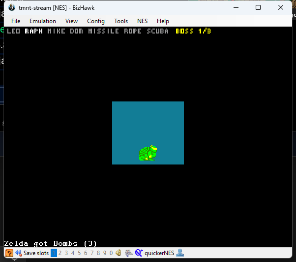

Play
Generate a seed, start everything with one command, then play Hyrule and New York until both Ganon and Shredder are beaten.
The start menu
Double-click start.cmd in the install folder. Choose with a number and Enter:
TMNT x A Link to the Past
Session: not running
Newest seed: AP_71282438010694857283.zip (made 2026-10-31 18:25)
1 Create a seed
2 Start a session
3 Check before going live
4 Stop the session
5 Open the guide
Q Quit (a running session keeps running)| Choice | What it does |
|---|---|
| 1 Create a seed | Makes a new seed from players\ into output\seeds (about a
minute) and offers to start it. |
| 2 Start a session | Picks a seed (Enter = the newest), starts everything as described below, then runs the check. |
| 3 Check before going live | One line per part, OK, WARN or FAIL, with what to do under each problem: install, server and slots, SNI, both BizHawk windows and their scripts, both clients, both trackers, the game swap, and in OBS the scene collection, the scenes and the pizza-wipe. |
| 4 Stop the session | Closes BizHawk gently first (so A Link to the Past's save is written), then the trackers, the clients, the server and SNI. |
Generate a seed
The player files are in players\: alttp.yaml (slot Link) and tmnt.yaml
(slot Turtles). start.cmd → 1 does this; by hand:
cd C:\Project\tmntalttp\Archipelago
..\.venv\Scripts\python.exe Generate.py --player_files_path ..\players --outputpath ..\output\seedsThe result is output\seeds\AP_<seed>.zip. It holds the server file, both patch files and
the spoiler log (with the playthrough). Keep the spoiler with the production team, off screen.
| Option | Default here | What it does |
|---|---|---|
start_turtle | raphael | The turtle you start with (or random). |
start_area | area_1 | The Area pass you start with; its tools come with it. |
start_hints | Leonardo, Michelangelo, Donatello, Missile Pack, Rope Pack | Hinted from the first minute, so the way to go mode is readable. |
progression_balancing | 75 (both slots) | Pulls progression between the games earlier, so the runner waits less. |
non_local_items | all turtles, passes and tools; Hookshot, Flippers, Moon Pearl | These always land in the other game, which weaves the two together. |
| ALttP | mode: open, goal: ganon, vanilla entrances | Standard Archipelago A Link to the Past. |
18a0630 (2026-10-31) lack the
unlimited-continues patch, so the third game over ends the run. Generate a new one.Start a session
start.cmd → 2 runs this script; by hand:
cd C:\Project\tmntalttp
powershell -ExecutionPolicy Bypass -File tools\start_stream.ps1 -Seed output\seeds\AP_<seed>.zipThe script patches the ROMs if needed, looks after A Link to the Past's save (below) and then starts, in order:
- MultiServer on
localhost:38281, in its own console window (host commands go there). - SNI.
- Game swap (
tools\game_swap.py) in its own console window; see Switching games. - BizHawk with ALttP and
lua\alttp_stream.luases: SNI's Lua connector plus the swap script (window "alttp-stream [SNES] - BizHawk"). - BizHawk with TMNT and
lua\tmnt_stream.luases: Archipelago's connector, the area menu and the swap script (window "tmnt-stream [NES] - BizHawk"). - SNI Client and BizHawk Client, already connected.
- Two PopTracker windows: ALttP (slot Link) and TMNT (slot Turtles).
It stops if port 38281 is already in use. Parameters: -Port, -AlttpSlot,
-TmntSlot, -EmuHawk, -PopTracker, -NoTracker,
-SwapHotkey (default ctrl+shift+space, none for no key) and
-NoObsSwitch (the swap leaves OBS alone).
A Link to the Past's save
Before BizHawk starts, tools\bizhawk_saves.py makes sure of three things:
- Autosave every minute. BizHawk normally writes the save to disk only when it closes, so a crash would lose the whole session. The script turns on BizHawk's own autosave.
- Back after a crash. BizHawk ignores its autosave when an older save file exists, so the script puts the
newer autosave in place first (the old file is kept as
alttp-stream.SaveRAM.before-recovery). - One save per seed. Every seed runs as
alttp-stream.sfc, and BizHawk names saves after the ROM. The script parks the last seed's save asalttp-stream.<seed>.SaveRAMand brings this seed's back, so a new seed never opens an old seed's file.
TMNT keeps no save of its own: its progress is on the server and in the area savestates.
Switching games
Both games run all the time, each in its own BizHawk window; the controller drives the window in front. To switch:
| Press | What happens |
|---|---|
| Select+Start on the controller | The game you leave pauses (Start), the other game's window comes to the front and OBS switches to its scene with the pizza-wipe. Press Start there to play on. |
| Ctrl+Shift+Space on the keyboard | The same, without pausing: pause first. |
| Alt+Tab or a click on a game window | Also fine: OBS follows whichever game window is in front. |
Notices from the game behind. When an item arrives for the other game, the game you are playing says so at the bottom left for two seconds: "Zelda got Hookshot" in TMNT, "TMNT got Rope Pack" in A Link to the Past. When a TMNT Area becomes playable, whichever game you play says "TMNT: Area 3 is open" (or "the Technodrome (GO MODE)"). That is the moment to think about switching.

What the pause looks like: TMNT shows its information screen. A Link to the Past opens the item menu, or, when Select reached the game first, the "Continue / Save and Quit" box with Continue picked; Start goes back to the game from either.
Items keep arriving in the game behind: BizHawk runs in the background ("Run in background" is on, "Accept background input" off, as BizHawk ships). OBS is only switched while it shows Hyrule or New York, so a host's own scene (a break, an interview) stays up. The swap's console window says when each game's script is ready, and logs every swap.
The TMNT side
Items (12 locations, 12 items)
| Item | What it does |
|---|---|
    Turtles Turtles |
A turtle you do not own is captured and cannot be picked. Received mid-Area, it is freed at once. |
 Sewer Pass: Area 1–5 Sewer Pass: Area 1–5 | Opens that Area in the area menu. |
 Missile Pack Missile Pack | 15 missiles for the Party Wagon (Area 3); refills whenever you hit 0. |
 Rope Pack Rope Pack | 5 ropes for the rooftop gaps (Areas 3 and 4); refills whenever you hit 0. |
 Zora's Scuba Kit Zora's Scuba Kit | Needed for the underwater dam in Area 2. |
 Whole Pizza Whole Pizza | Filler. |
What each Area needs
| Area | To enter | Locations |
|---|---|---|
| 1 | Sewer Pass 1 | Sewer Entrance, Boss |
| 2 | Sewer Pass 2 + Zora's Scuba Kit | Sewer Entrance, Boss |
| 3 | Sewer Pass 3 + Missile Pack + Rope Pack | Sewer Entrance, Boss |
| 4 | Sewer Pass 4 + Rope Pack | Sewer Entrance, Boss |
| 5 | Sewer Pass 5 (the boss needs Donatello) | Sewer Entrance, Boss |
| 6 Technodrome | all four turtles + 3 of the 5 Area bosses beaten | Shredder (goal) |
Plus two free gifts in the Turtle Lair (Splinter's Gift, April's Van), sent as soon as the client connects. A sewer entrance counts when its Area loads; a boss counts when you beat it.
Area menu and HUD


| Buttons | Does |
|---|---|
| Select + Up | Open the area menu (game input is held while it is open) |
| Up / Down, A | Pick an Area and load it |
| B or Select + Down | Close the menu (not when it was forced open) |
| Select + Left | Hide or show the status bar |
Received items show in BizHawk's message area: "Got Rope Pack from Link", "Found Leonardo".
What happens when…
| …you | Then |
|---|---|
| beat an Area boss | The game moves on to the next Area. If its pass is missing, the menu opens and stays open until you load an unlocked Area. |
| lose every turtle | Game over, then CONTINUE. Continues are unlimited (the ROM is patched); the Area restarts and your owned turtles are free again. |
| run out of missiles or ropes | With the pack you are refilled at once. Vanilla pickups still exist as bonus ammo. |
| rescue a captured turtle in the game | If you do not own her, the client captures her again. |
| start a new game from the title screen | The menu opens; pick an Area. |
| beat a boss while the client is disconnected | It is remembered in RAM and sent when the client comes back. |
| see "Connect the AP client" in the menu | The BizHawk Client is not connected yet. |
The ALttP side
Standard Archipelago A Link to the Past through SNI: open mode, goal Ganon, vanilla entrances. Its chests hold turtles, passes and packs; TMNT's bosses and entrances hold its items (Hookshot, Flippers and Moon Pearl always do). Crystals are shuffled between dungeons as usual; the runner sees them on the map.
Host commands
Type these in the MultiServer console window:
| Command | Use |
|---|---|
/hint Turtles Donatello | Reveal where an item is, e.g. as a donation incentive. |
/send Turtles Rope Pack | Emergency: give an item. |
/send_location Turtles Area 2 - Boss | Emergency: count a location as checked. |